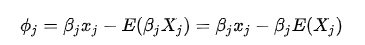
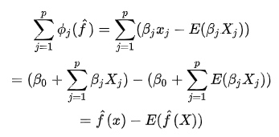
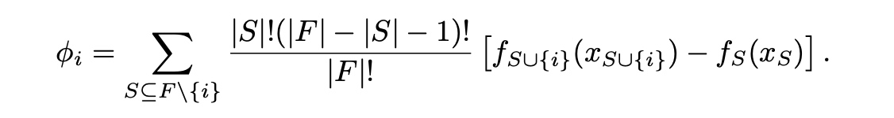
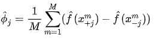
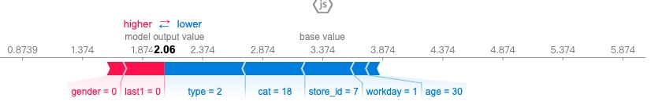
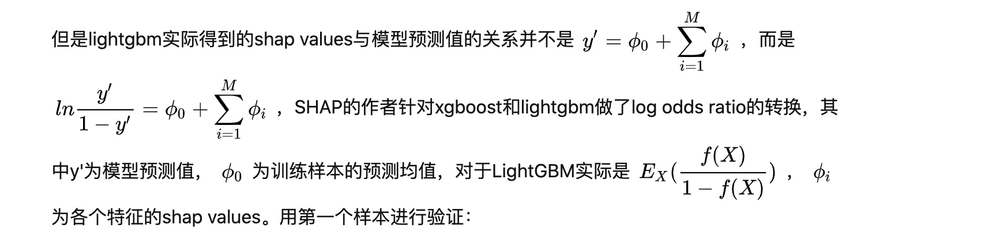

所属 Topic：机器学习 · 类型：概念
该篇主要是对特征归因分析中的SHAP（Shapley Additive exPlanations）方法介绍。
主要的两篇论文:
- 2017,Lundberg《A Unified Approach to Interpreting Model Predictions》
- 2018,Lundberg《Consistent Individualized Feature Attribution for Tree Ensembles》，介绍了shap工具
1.shapley值#
shap方法的主要思想就是利用了shapley值。shapley值是由Shapley在1953年提出来的，主要针对玩家收益分配问题，属于合作博弈论的方法。
Shapley值是所有可能联盟中特征值的平均边际贡献。即我们先固定要研究的特征，然后其他所有特征按分布随机去取，可以对模拟出来的数据计算估计出来的y，取均值作为特征取该值的时候的平均估计，然后更改该特征，重复此步骤。
2 数学表示#
additive feature attribution methods可加性特征归因方法
可加性特征归因分析方法是指满足如下关系的: $g(z')=\phi_0 + \sum\phi_i z_i'$
其中z_i'是二值变量{0,1}
作者总结了常见的6中特征解释方法都可以归结到这种形式: LIME、DeepLift
（1）简单的线性模型
对于简单的模型(比如线性回归)，模型本身就可以用于解释。比如回归模型\hat f(x) = \beta_0 + \beta_1x_1 + ...\beta_p x_p
定义第j个特征对预测的\hat f(x)的贡献是

即特征影响-平均影响。将所有的特征影响相加，有数据点 x 的贡献之和等于预测值减去平均预测值

(2)非线性模型
而对于复杂模型，比如ensemble或者deep networks就需要找近似的。这里利用shapley的逻辑，计算shapley值:

- 公式前面的部分是权重，后面的部分即模型中引入特征i后带来的增益。整体相当于是引入特征i带来的平均增益
关于shap value计算例子的一个详细case: https://mathpretty.com/11210.html， 可以了解上述的这个公式是怎么来的
这样计算得到的Shapley值是唯一满足效率性（Efficiency），对称性（Symmetry），虚拟性（Dummy）和可加性（Additivity）四个属性的归因方法，它们可以一起被视为**公平支出**的定义。
效率性
特征贡献的累加等于x的预测和预测平均值的差值
3.shapley值的计算#
如果按照原始的公式进行计算的话，可能的维度组合会非常大，所以实际中采用的是近似计算。
shap regression value:
假设特征为abcd， 现在想看特征c对最终label的影响。因为特征之间可能存在多重共线性，所以谁先放入模型可能会对结果有影响。比如假设b和c的贡献是一样的，a->ac可以看出来c的贡献，ab -> abc的时候可能c的贡献就被b稀释了。所以需要考虑所有可能的排列组合。
考虑当前子集S,然后在此子集S基础上引入新的特征i，而后再引入其他的特征。则所有的排列组合可能情况一共是|S|!(|F|-|s|-1)!。 因此出现了全面的权重。将所有可能的Subset进行汇总平均即为最终的特征贡献。
shap sampling values

利用蒙特卡洛模拟的方式简化计算
- 利用抽样近似；理论上是把所有的排列组合计算一遍，实际操作上进行随机抽样即可
- 在估计去掉i特征的时候，通过对特征i进行聚合的方式（边际）。除了特征 j 的值，其他不在联盟内的特征值被来自随机数据点 z 的特征值替换。 x 向量 [公式] 几乎与 [公式] 相同，但被随机数据点 z 的特征值替换的特征包括特征 j 。
4.SHAP (SHapley Additive exPlanation)#
Max SHAPE, Deep SHAP
tree-explainer:
https://github.com/suinleelab/treeexplainer-study
SHAP是在LIME之后提出的一个模型解释的包，可以解释任何机器学习模型。SHAP会为每个样本产生一个shap value。一个特征的shapley value是该特征在所有的特征序列中的平均边际贡献。该值满足如下的等式:
$y_i = y_{base}+ f(x_{i1})+f(x_{i2}) + ...f(x_{ik})$
其既可以看单个样本的值，也可以看global的(将所有个体的每个特征的shape value的绝对值求和)
5.计算工具shap 包#
github: https://github.com/slundberg/shap
import shap
shap.initjs()
def plot_shap(model, data_for_prediction):
## data_for_prediction 可以是一行也可以是多行的df
explainer = shap.TreeExplainer(model) # 计算model的shap值
shap_values = explainer.shap_values(data_for_prediction) # 计算样本数据的shap值
return shap.force_plot(explainer.expected_value, shap_values, data_for_prediction)

图形解释:
- Base value 是指模型在数据集上的输出均值3.374
- output value 在当个样本上的输出值，这里是2.06。
- 起正向作用的是红色，其负向作用的是蓝色。
global解释:
每个数据点的特征情况 shap.summary_plot(shap_values, X)
特征重要性： shap.summary_plot(shap_values, X, plot_type="bar")
注意:

新版的shap对于lightgbm输出的expected_value是[]
===
针对shap
$ln \frac{y}{1-y} = \phi_0 + \sum \phi_i$
两两之间的交互特征:
shap_interaction_values = explainer.shap_interaction_values(X)
shap.summary_plot(shap_interaction_values, X)
特征重要性 I_j=\sum |\phi_j^{i}|
目前许多解释机器学习模型局部预测的方法都属于可加特征归因方法（Additive feature attribution methods），比如LIME、DeepLIFT、 分层相关传播（layer-wise relevance propagation）、Shapley回归值（Shapley regression values），Shapley采样值（Shapley sampling values）和定量输入影响（Quantitative Input Influence），而SHAP（Shapley Additive exPlanations）则是统一了上面六种方法的解释预测框架。
SHAP的理论特性比较好，比如一致性(换用不同model得到相同)、可加性
shap 支持不同类型的模型:
- TreeExplainer: XGBoost/LightGBM/CatBoost/scikit-learn/pyspark models
- DeepExplainer (TensorFlow/Keras models)
- KernelExplainer (explains any function)
shap支持xgboost，lightgbm
shap嵌入了xgboost和lightgbm，可以在其中直接调用。。。
model.predict(case, pred_contrib=True)
6.基于shap的可视化app#
shapash#
https://github.com/MAIF/shapash

ExplainerDashboard#
https://github.com/oegedijk/explainerdashboard
pip install explainerdashboard
- 特征重要性
- 模型预测结果总结
- 单个样本解释（局部)
- what if 模拟
- 特征依赖分析（全局)
- 特征交互分析
- 树模型（针对个别模型，随机森林等)
官方文档学习#
1. API-explainers#
LinearExplainer：
- 如果特征之间是相互独立的，学出来的就是coef[i] * (x[i] - X.mean(0)[i])。
- 如果特征之间存在多重共线性，也会去做相应的处理
2. shap与因果的关系#
https://shap.readthedocs.io/en/latest/example_notebooks/overviews/Be%20careful%20when%20interpreting%20predictive%20models%20in%20search%20of%20causal%C2%A0insights.html
https://github.com/slundberg/shap/blob/master/notebooks/overviews/Be%20careful%20when%20interpreting%20predictive%20models%20in%20search%20of%20causal%C2%A0insights.ipynb
in this article, we discuss how using predictive models to guide this kind of policy choice can often be misleading
通过模拟一个因果的数据，
import shap
explainer = shap.Explainer(model)
shap_values = explainer(X)
clust = shap.utils.hclust(X, y, linkage="single")
shap.plots.bar(shap_values, clustering=clust, clustering_cutoff=1)

预测任务 vs 因果任务
- 预测，只关注预测的精度
- 因果：我们采取什么样的行为才能增加Y
直接用shap的结果去做因果层的推断的话可能会带来的问题：
- When we have the same information captured by several features, predictive models can use any of those features for prediction, even though they are not all causal.
-
预测模型什么时候可以回答因果
-
it is not subject to bias from either unmeasured confounders or feature redundancy. 不光要求特征和其他特征相互独立，并且没有未观察到的混杂因素

- 不能回答时候
(1)Observed confounding
解决方式： Observational Causal Inference。比如DoubleML的方式。
Double ML works as follows:
- Train a model to predict a feature of interest (i.e. Ad Spend) using a set of possible confounders (i.e. any features not caused by Ad Spend).
- Train a model to predict the outcome (i.e. Did Renew) using the same set of possible confounders.
- Train a model to predict the residual variation of the outcome (the variation left after subtracting our prediction) using the residual variation of the causal feature of interest.
在现有的econML和CausalML中均有自动实现
(2) Non-confounding redundancy
对y既有直接影响，也能通过其他变量对y有间接影响
参考资料#
shap知识点大全 https://zhuanlan.zhihu.com/p/85791430
解释xgb和lgb中的shap值，一个很详细的实践案例 https://zhuanlan.zhihu.com/p/103370775
假设特征为abcd， 现在想看特征c对最终label的影响。因为特征之间可能存在多重共线性，所以谁先放入模型可能会对结果有影响。
比如假设b和c的贡献是一样的，a->ac可以看出来c的贡献，ab -> abc的时候可能c的贡献就被b稀释了。
所以需要考虑所有可能的排列组合。将所有可能的Subset进行汇总平均即为最终的特征贡献。